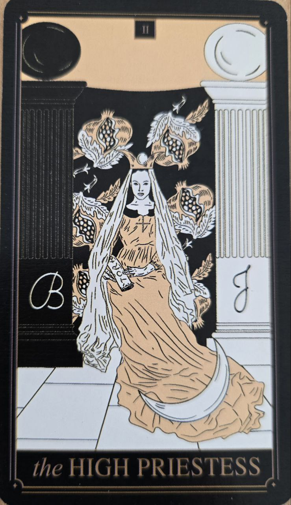

Veľkňažka predstavuje ticho, intuíciu a vnútorné poznanie, ktoré nepochádza z logiky, ale z hlbšieho vnímania. Je to karta, ktorá stojí medzi viditeľným a neviditeľným svetom.
Na rozdiel od aktívneho Mága, Veľkňažka nejedná navonok — skôr pozoruje, vníma a čaká na správny moment.
Táto karta symbolizuje intuíciu, skryté informácie a vnútorný hlas. Často naznačuje, že odpoveď už existuje, ale nie je ešte vedome spracovaná.
Veľkňažka učí trpezlivosti a schopnosti nezasahovať tam, kde je lepšie najprv pochopiť situáciu.
Na karte býva postava sediaca medzi dvoma stĺpmi, ktoré predstavujú dualitu — svetlo a tmu, vedomie a podvedomie.
Závoj za ňou často zakrýva tajomstvo, ktoré nie je okamžite prístupné. Symbolizuje hranicu medzi tým, čo vieme, a tým, čo len tušíme.
Voda alebo mesačné motívy sa často spájajú s jej energiou, pretože reprezentujú emócie a podvedomie.
Veľkňažka je opakom potreby okamžitého vysvetlenia. Ukazuje, že nie všetko musí byť hneď pochopené, aby to malo význam.
Jej „sila“ je v tichu, nie v akcii — čo je v modernom svete často prehliadané.